Hi, I’m Chris — a design leader defining how products are built in the age of AI.
I’m a strategic design leader building and scaling enterprise and SaaS products across supply chain, ERP, ALM, and e-commerce.
I lead UX and UI engineering teams, creating AI-powered product experiences that simplify complex systems into actionable decisions.
My focus is on combining human-centered design, systems thinking, and AI-driven innovation to deliver scalable solutions and measurable business outcomes.
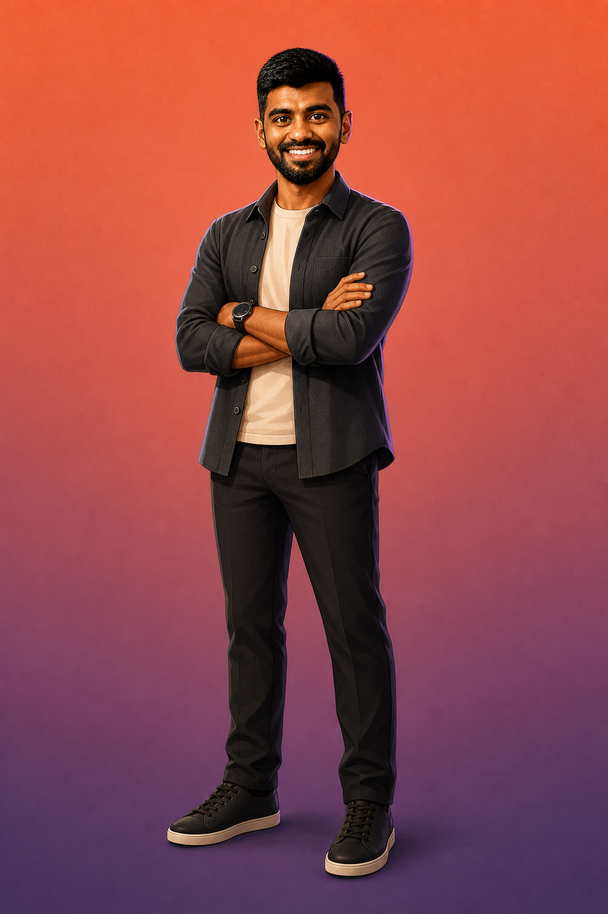
18+
Years of Experience
Designing enterprise products across supply chain, ERP, and SaaS
7+
Years in Design Leadership
Building and scaling high-performing design teams
10+
Enterprise Applications
Shipped mission-critical platforms at scale
2→12+
Team Growth
Scaled design teams across India, US, and UK
Some of the enterprises that I’ve designed experiences for.

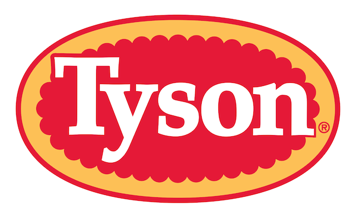
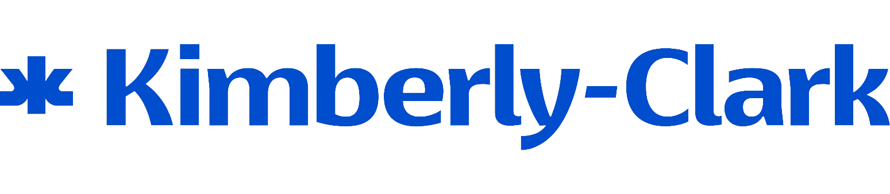
Case studies in visibility, trust, and AI-native design.
A mix of deep case studies and workshop-driven discovery work from 18+ years designing supply chain, ERP, and enterprise SaaS products. Click a card to view the full case study.


Leading with empowerment, trust, and clarity.
I believe world-class design teams are built on empowerment, trust, and accountability. My role as a leader is to create the conditions where designers feel confident to take ownership, experiment boldly, and learn fearlessly — then get out of the way.
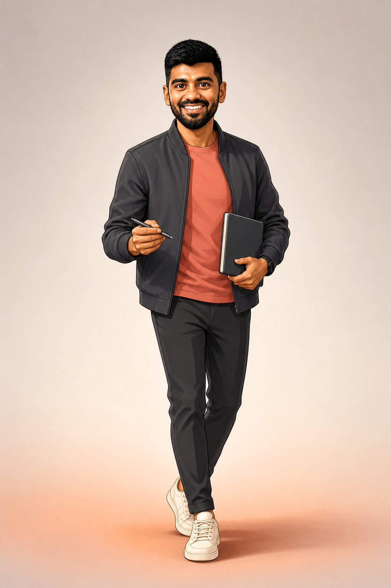
Six principles that shape how I lead.
Empowerment & Ownership
I create the conditions where designers feel confident to take ownership, experiment boldly, and learn fearlessly.
Trust & Accountability
World-class design teams are built on empowerment, trust, and accountability at every level.
Fail Fast, Fail Safe
I foster a culture of continuous growth, where psychological safety lets teams take risks without losing sight of impact.
Clarity & Connection
Aligning design vision with business strategy so every designer understands not just the task, but the value it creates.
Shared Purpose
Instilling pride, curiosity, and a sense of shared purpose to build teams that are strategic partners, not just executors.
Feedback & Recognition
Giving timely, actionable feedback, celebrating wins, and guiding through challenges so people keep growing.
Recognition earned along the way.
2 → 12+ Designers
Scaled the design team across India, US, and UK, coaching senior ICs into managers.
4 Industry Awards
Top Gun Leadership (2021), Dream Team (2019, 2021), and CollabNet Hackathon Runner-up (2017).
#2 Usability Ranking
FourKites' first-ever Nucleus Research evaluation.
3 Years Running
Gartner® Magic Quadrant™ Leader recognition for UX (2021–2023).
Conference Keynotes
Delivered keynotes and design-thinking workshops for industry and university audiences.
Leadership outcomes, by the numbers.
18%→46%
Engagement to Upsell Growth
Workspace ecosystem redesign lifted executive engagement within 3 months, driving overall upsell growth.
+32
Executive NPS Lift
Generated 100+ product leads and accelerated upsell closures within the first month.
20+
Fortune 500 Executives
Facilitated an AI disruption-management workshop, positioning AI as a resilience lever.
100%
Contactless Operations
FastTrack's QR-based check-in eliminated kiosk infrastructure costs entirely.
ROI
Value Realization
"ROI Wrapped" shortened renewal cycles, reduced churn risk, and created new upsell opportunities.
3
Continents Reached
The Border Congestion Map (COVID-19) was cited by NYT & GlobeNewswire, rerouting supply chains.
3.8→4.8
CarrierLink App Rating
Positioned among the top-rated supply chain apps, driving 500,000+ downloads.
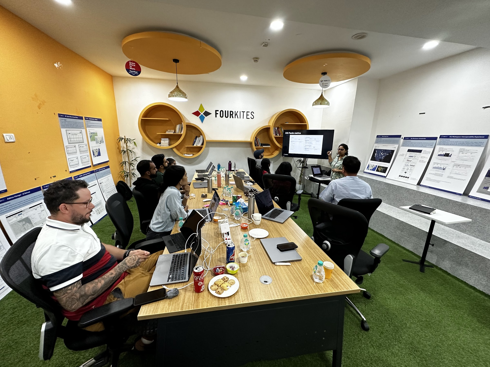
Design Reviews, In Person
Walking the FourKites team through research and design decisions in Chicago.
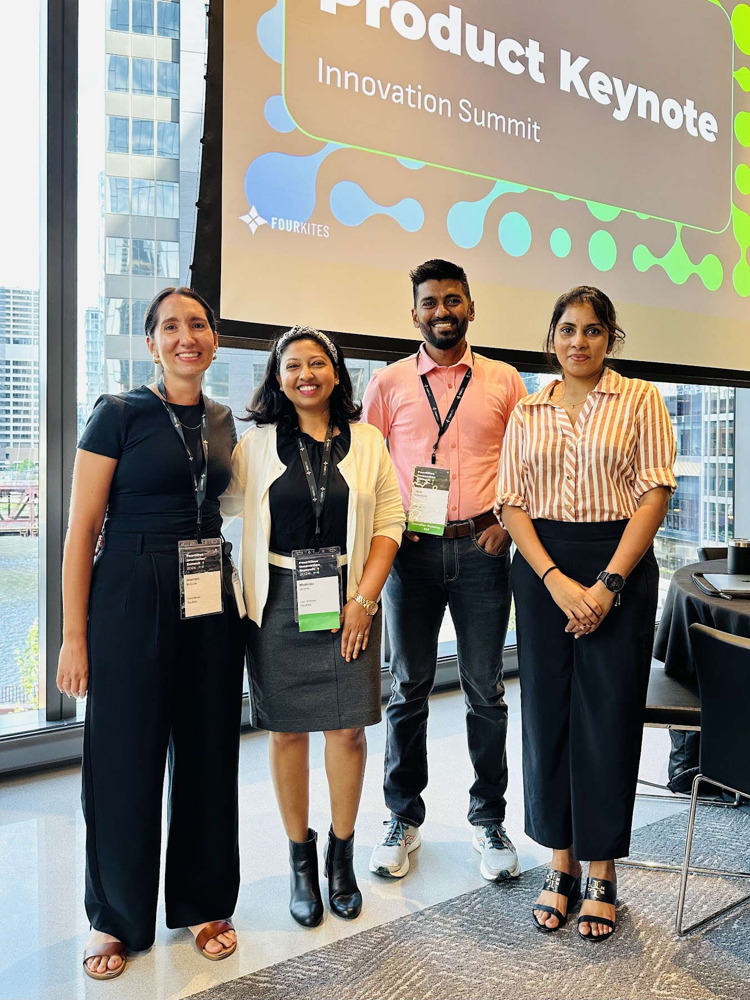
Product Keynote
Sharing the vision for the new Visibility Experience at FourKites' Innovation Summit.
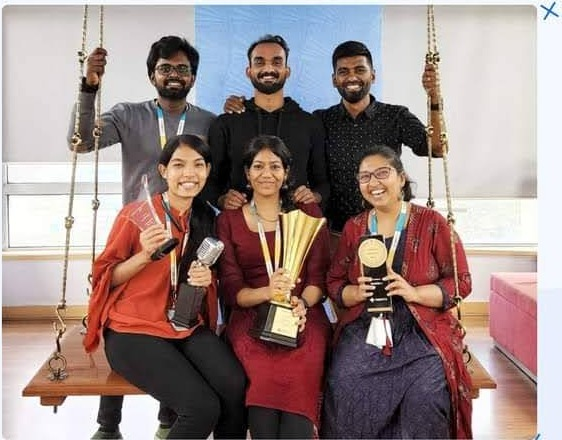
Dream Team Award
Celebrating with the design team after winning FourKites' Dream Team Award (2019, 2021).
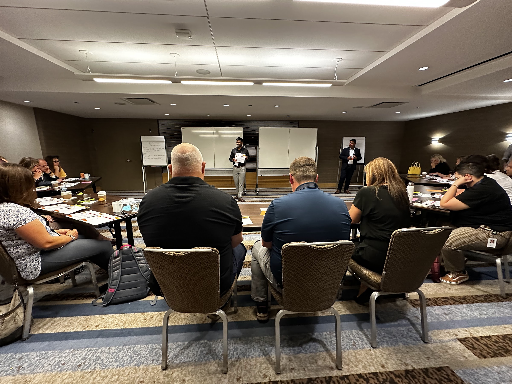
Customer Workshops
Leading discovery and innovation workshops — in-house, on-site with customers, and at industry conferences.
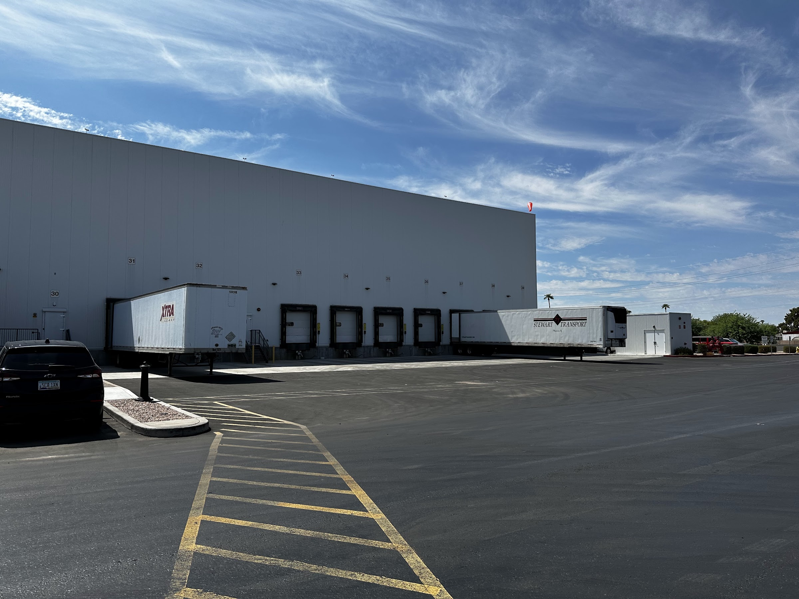
Customer Site Visits
Visiting customer sites to see firsthand how their teams operate, day to day.
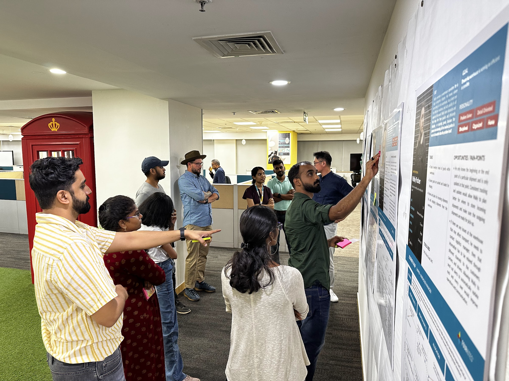
Usability Sessions
Running usability and research sessions to turn user feedback into informed design decisions.
18+ years building design organizations.
-
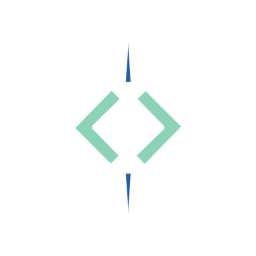
Mar 2026 – PresentDirector of Product Design
Resilinc Inc.
Leading UX and UI engineering at Resilinc, an AI-powered supply chain risk intelligence platform trusted by global enterprises in life sciences, aerospace, and automotive. Driving end-to-end product design across supply chain intelligence, disruption management, and agentic AI workflows.
- Pioneered AI-driven design leadership, introducing AI-assisted prototyping and a five-stage design process that accelerated concept-to-handoff cycles.
- Defined agentic AI experience standards — explainability, confidence signaling, and human-in-the-loop governance — across LLM-powered workflows.
- Built Atlas 2.0, a three-tier token design system standardizing UI delivery across the platform (Angular 19 + Tailwind CSS).
- Authored the UX SOP, a governing design framework for AI integration patterns, component standards, and validation.
-
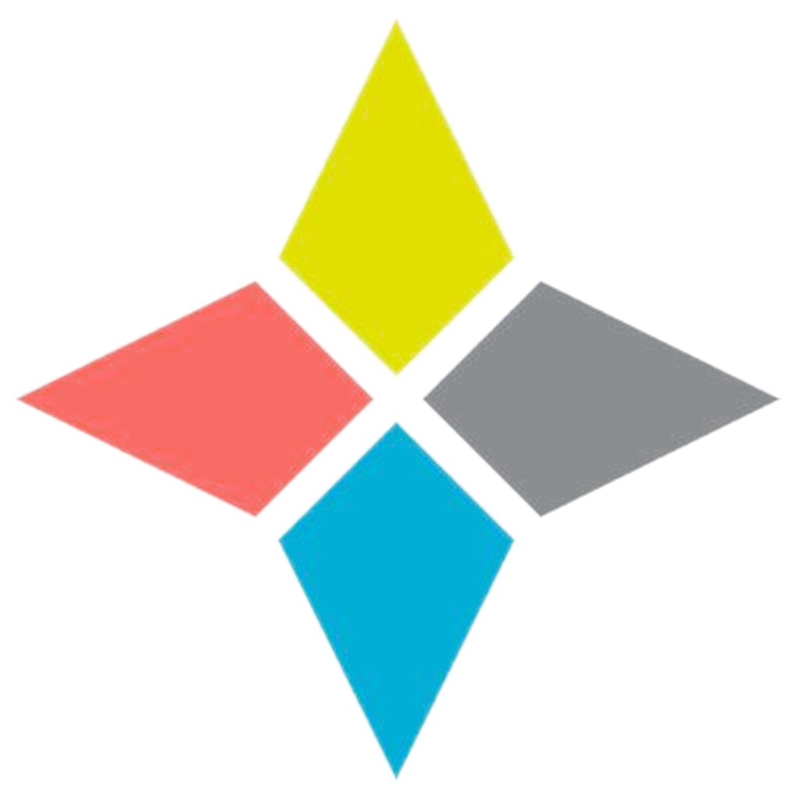
Dec 2019 – Feb 2026 (6 yrs 5 mos)Director of UX
FourKites Inc.
Lead UX Designer → UX Manager → Senior Manager → Director of UX
Led UX strategy, AI integration, and design execution across Control Tower, FIN AI, Dynamic Yard, and Workspace at FourKites, a global leader in supply chain visibility and predictive logistics — partnering with CEO, Product, Engineering, Sales, and Data Science leadership to align design outcomes with NPS, engagement, and ARR growth.
- Drove the FIN AI rollout — natural-language AI for supply chain insights — shifting decision-making from reactive to proactive.
- Established a design ROI framework (value dashboards, executive storytelling, upsell triggers), lifting Executive NPS by +32 points and driving 46% growth in upsells.
- Facilitated an AI disruption-management workshop with 20+ Fortune 500 executives, positioning AI as a resilience lever that reduced detention costs.
- Scaled the design team from 2 to 12+ across India, US, and UK, coaching senior ICs into managers and embedding design culture aligned with business OKRs.
-
Jun 2014 – Dec 2019 (5+ yrs)
Sr. UX Designer
CollabNet VersionOne (now Digital.ai)
Designed enterprise agile lifecycle management (ALM) software used by distributed engineering teams, translating complex agile and DevOps workflows into intuitive, usable interfaces.
- Led end-to-end UX for core ALM product modules — from user research and wireframing through high-fidelity design and usability testing.
- Ran contextual inquiries and usability studies with enterprise customers to uncover workflow friction and inform iterative design.
- Partnered with product and engineering to translate agile and DevOps concepts into clear, accessible visual interfaces.
- Contributed to early design-system foundations, improving UI consistency across the product suite.
-
Nov 2009 – Jun 2014 (4+ yrs)
Module Lead – UX
Mindtree Ltd. (now LTIMindtree)
Led UX for enterprise client engagements across industries, owning design delivery for a module team while establishing UX practices within a fast-scaling IT services environment.
- Directed UX design for enterprise client projects, from discovery through prototyping and delivery.
- Mentored junior designers and coordinated design quality across a module team.
- Introduced structured UX processes — competitive analysis, information architecture, and design documentation — for client engagements.
- Facilitated stakeholder workshops to align design direction with client business goals.
-
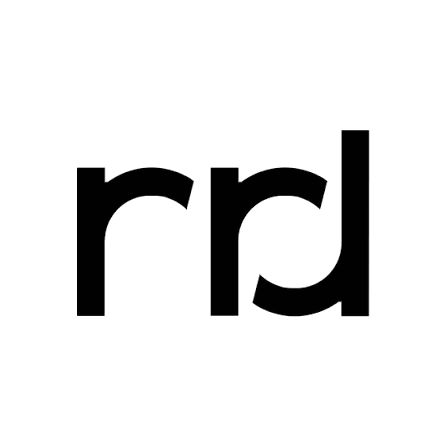
Jun 2005 – Nov 2009 (4+ yrs)Sr. Web Designer
RR Donnelley
Designed web and digital marketing experiences early in a career built on strong visual and front-end design fundamentals.
- Designed web pages and digital collateral for enterprise marketing and communications clients.
- Built the visual and front-end design foundation (HTML/CSS) underpinning later UX specialization.
- Collaborated with cross-functional teams to deliver client-facing digital assets on tight timelines.
- Developed an eye for typography, layout, and visual hierarchy that carried into later UX leadership roles.
Education
-
Human Computer Interaction (HCI)
IIT Bombay · 2017
-
Foundation in Design Thinking
IDEO U
-
Bachelor's Degree in Computer Science
St. John's College, MS University · 2001 – 2004
Some of the tools and platforms I rely on.
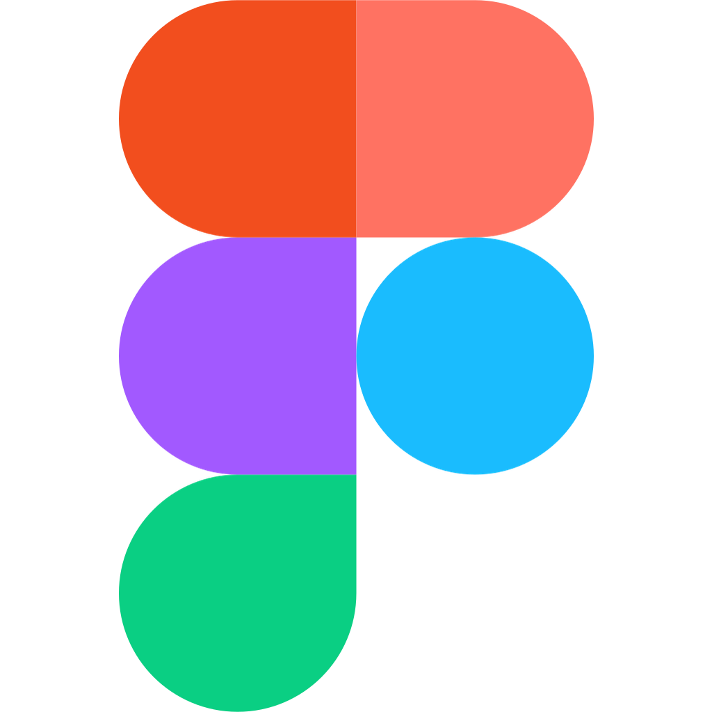
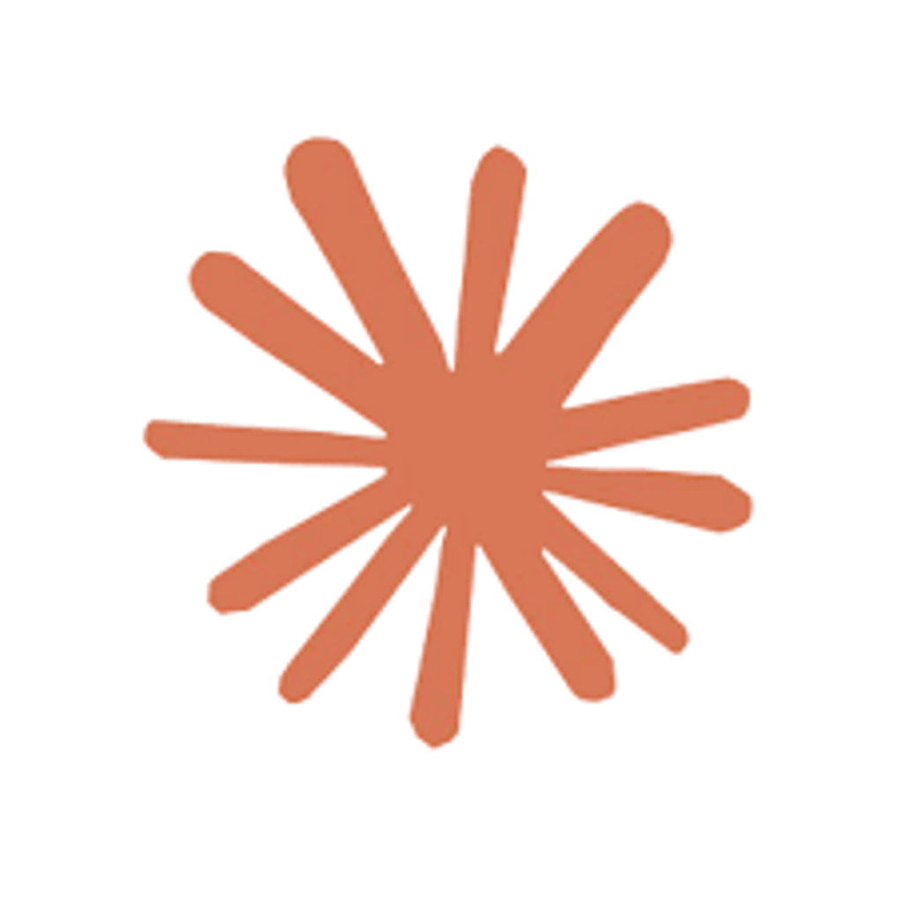
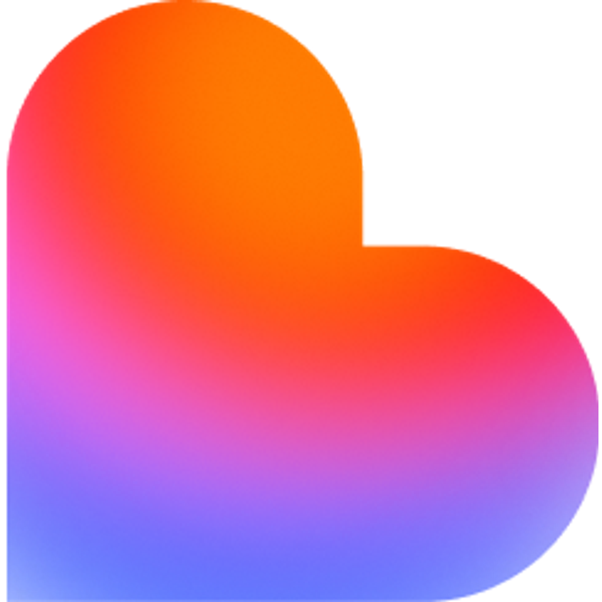
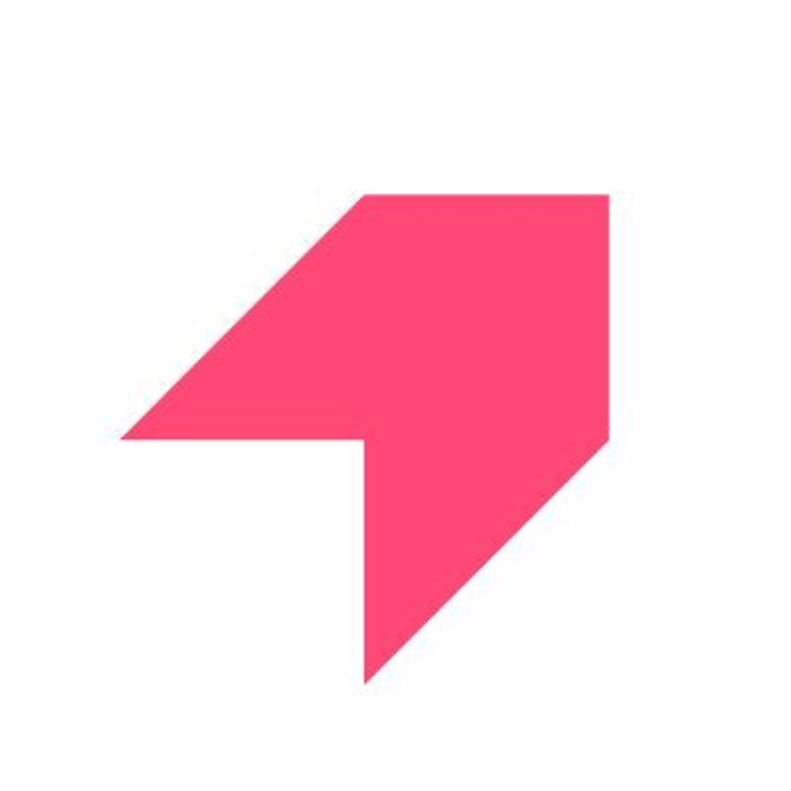
Hi, I’m Chris — a design leader defining how products are built in the age of AI.
Director of Product Design · India
Design leader with 18+ years of global experience building high-performing design organizations and shaping data-driven, user-centered products across supply chain, ERP, ALM, e-commerce and enterprise SaaS. Currently Director of Product Design at Resilinc, driving AI-powered design strategies that impact engagement, retention, and revenue growth for Fortune 500 customers. Recognized for transforming design from a support function into a strategic growth lever, with expertise in design systems, AI/ML integration, customer co-creation, and measurable ROI communication.